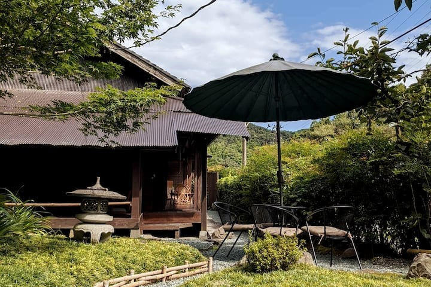
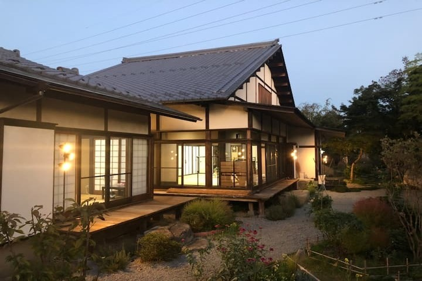
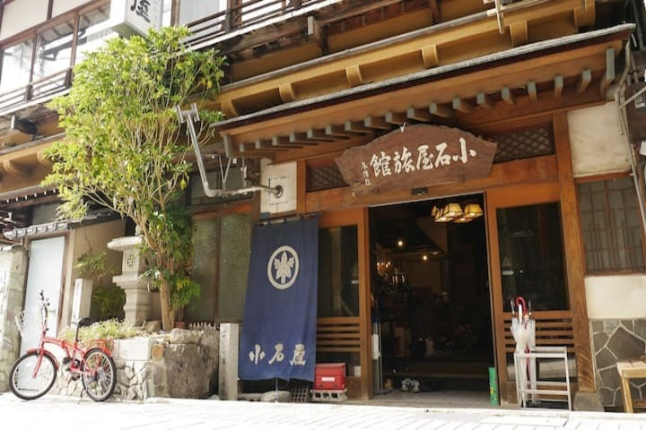
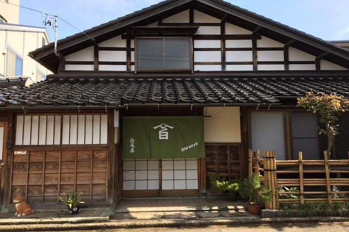
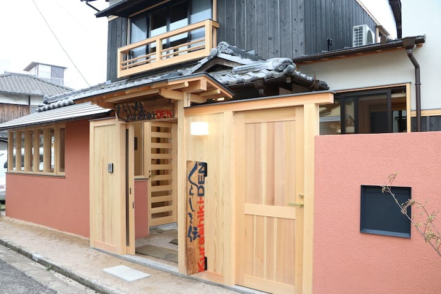
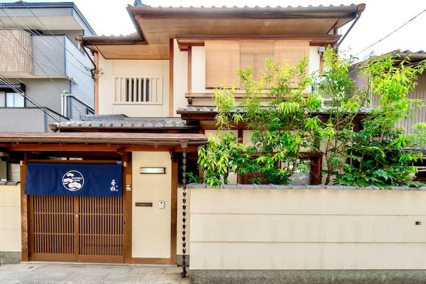
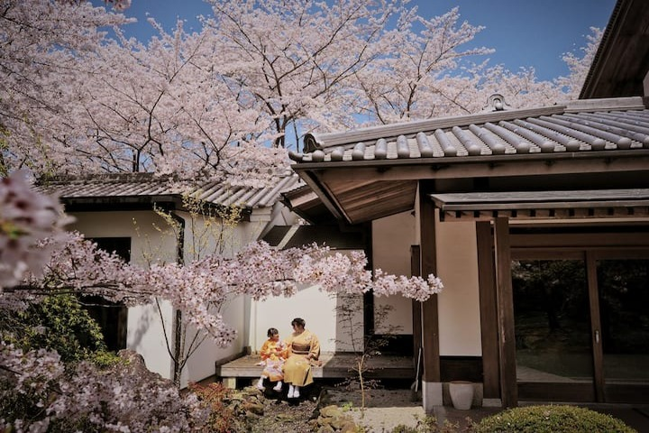
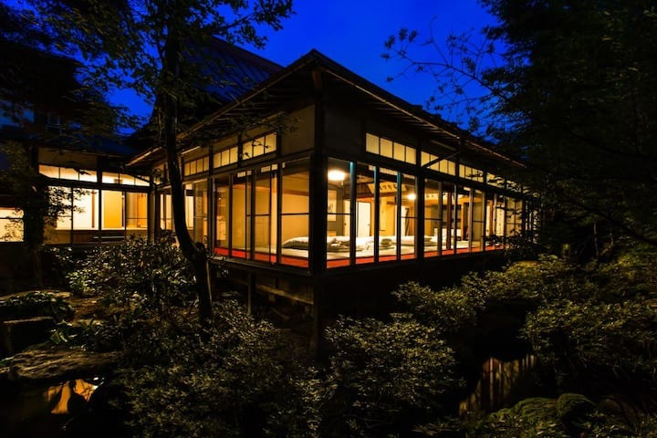

Ryokans japonais








Ryokan Fujieda
5 lits
171€ par nuit
Ryokan Fuefuki
3 lits
96€ par nuit
Ryokan Yamanouchi
4 lits
75€ par nuit
Ryokan Kanazawa
2 lits
93€ par nuit
Ryokan Kurashiki
6 lits
334€ par nuit
Ryokan Shimogyo
1 lit double
252€ par nuit
Ryokan Izumi
4 lits
211€ par nuit
Ryokan Takayama
3 lits
258€ par nuit